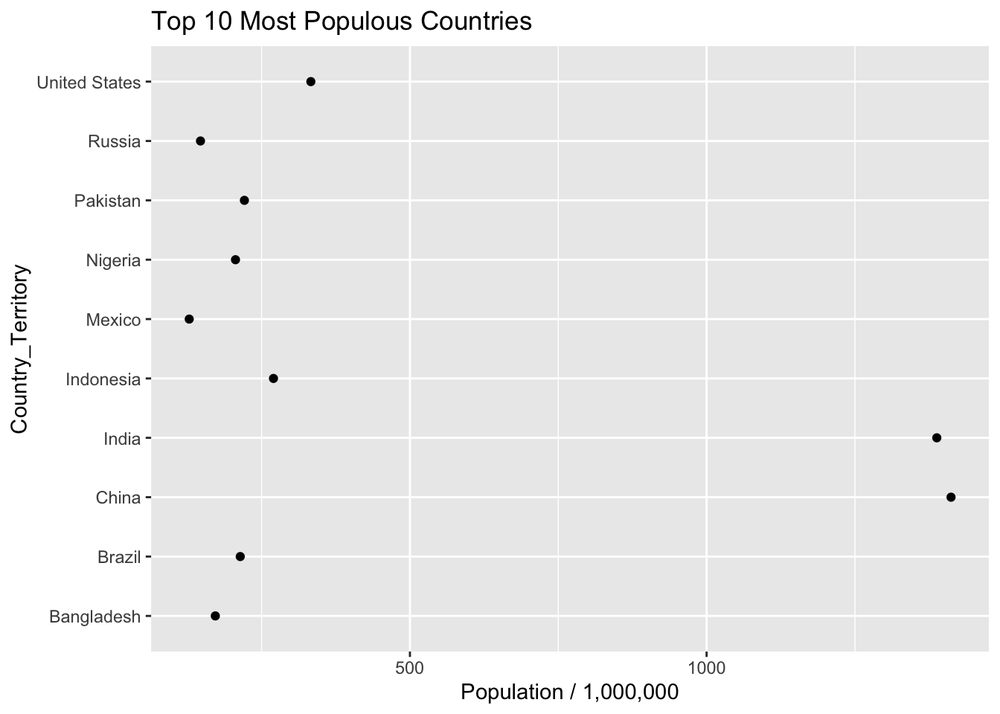

Web Scraping with R
2022-02-08
Chapter 1 Motivations
1.1 Lots of Data For The Taking ?
The web hosts lots of interesting data that you can ”scrape”. Some of it is stashed in data bases, behind APIs, or in free form text. Lots of people want to grab information of of Twitter or from user forums to see what people are thinking. There is a lot of valuable information out there for the taking although some web sites have “caught on” and either block programmatic access or they setup “pay walls” that require you to subscribe to an API for access. The New York Times does this. But there are lots of opportunities to get data.
| tables | Fetch tables like from Wikipedia |
| forms | You can submit forms and fetch the results |
| css | You can access parts of a web site using style or css selectors |
| Tweets | Process tweets including emojis |
| Web Sites | User forums have lots of content |
| Yes you can “scrape” photos also |
1.2 Web Scraping Can Be Ugly
Depending on what web sites you want to scrape the process can be involved and quite tedious. Many websites are very much aware that people are scraping so they offer Application Programming Interfaces (APIs) to make requests for information easier for the user and easier for the server administrators to control access. Most times the user must apply for a “key” to gain access.
For premium sites, the key costs money. Some sites like Google and Wunderground (a popular weather site) allow some number of free accesses before they start charging you. Even so the results are typically returned in XML or JSON which then requires you to parse the result to get the information you want. In the best situation there is an R package that will wrap in the parsing and will return lists or data frames.
Here is a summary:
First. Always try to find an R package that will access a site (e.g. New York Times, Wunderground, PubMed). These packages (e.g. omdbapi, easyPubMed, RBitCoin, rtimes) provide a programmatic search interface and return data frames with little to no effort on your part.
If no package exists then hopefully there is an API that allows you to query the website and get results back in JSON or XML. I prefer JSON because it’s “easier” and the packages for parsing JSON return lists which are native data structures to R. So you can easily turn results into data frames. You will ususally use the rvest package in conjunction with XML, and the RSJONIO packages.
If the Web site doesn’t have an API then you will need to scrape text. This isn’t hard but it is tedious. You will need to use rvest to parse HMTL elements. If you want to parse mutliple pages then you will need to use rvest to move to the other pages and possibly fill out forms. If there is a lot of Javascript then you might need to use RSelenium to programmatically manage the web page.
1.3 Understanding The Language of The Web
The Web has its own languages: HTML, CSS, Javascript
<h1>, <h2>, ..., <h6> Heading 1 and so on
<p> Paragraph elements
<ul> Unordered List
<ol> Ordered List
<li> List Element
<div> Division / Section
<table> Tables
<form> Web formsSo to be productive at scraping requires you to have some familiarity with HMTL XML, and CSS. Here we look at a very basic HTML file. Refer to See http://bradleyboehmke.github.io/2015/12/scraping-html-text.html for a basic introductory session on HTML and webscraping with R
<!DOCTYPE html>
<html>
<body>
<h1>My First Heading</h1>
<p>My first paragraph.</p>
</body>
</html>
And you could apply some styling to this courtest of the CSS language which allows you to inject styles into plain HTML:


1.3.1 Useful tools
There are a number of tools that allow us to inspect web pages and see “what is under the hood.” Warning - I just discovered that one of my favorite browser plugins (firebug) to find the xpaths and/or css paths of page elements is no longer supported under Firefox or Chrome. I’ve found a couple of replacements but they don’t work as well. I’ll research it more. The way that Selector Gadget and xPath work is that you install them into your browswer and then activate them whenever you need to identify the selector associated with a part of a web page.
| Selector Gadget | http://selectorgadget.com/ |
| Firebug | https://getfirebug.com/ (now integrated into a version of Firefox) |
| xPath | https://addons.mozilla.org/en-US/firefox/addon/xpath_finder/ |
| Google Chrome | Right click to inspect a page element |
| Google Chrome | View Developer - Developer Tools |
| Oxygen Editor | Can obtain via the Emory Software Express Site |
1.4 Useful Packages
You will use the following three primary packages to help you get data from various web pages: rvest, XML, and RJSONIO. Note that you won’t always use them simultaneously but you might use them in pairs or individually depending on the task at hand.
1.5 Quick rvest tutorial
Now let’s do a quick rvest tutorial. There are several steps involved in using rvest which are conceptually quite straightforward:
- Identify a URL to be examined for content
- Use Selector Gadet, xPath, or Google Insepct to identify the “selector” This will be a paragraph, table, hyper links, images
- Load rvest
- Use read_html to “read” the URL
- Pass the result to html_nodes to get the selectors identified in step number 2
- Get the text or table content
library(rvest)
url <- "https://en.wikipedia.org/wiki/World_population"
(paragraphs <- read_html(url) %>% html_nodes("p"))## {xml_nodeset (51)}
## [1] <p class="mw-empty-elt">\n\n</p>
## [2] <p>In <a href="/wiki/Demography" title="Demography">demographics</a>, the <b>world popula ...
## [3] <p>The world population has experienced <a href="/wiki/Population_growth" title="Populati ...
## [4] <p><a href="/wiki/Birth_rate" title="Birth rate">Birth rates</a> were highest in the late ...
## [5] <p>Six of the Earth's seven <a href="/wiki/Continent" title="Continent">continents</a> ar ...
## [6] <p>Estimates of world population by their nature are an aspect of <a href="/wiki/Modernit ...
## [7] <p>It is difficult for estimates to be better than rough approximations, as even modern p ...
## [8] <p>Estimates of the population of the world at the time agriculture emerged in around 10, ...
## [9] <p>The <a href="/wiki/Plague_of_Justinian" title="Plague of Justinian">Plague of Justinia ...
## [10] <p>Starting in AD 2, the <a href="/wiki/Han_Dynasty" class="mw-redirect" title="Han Dynas ...
## [11] <p>The <a href="/wiki/Pre-Columbian_era" title="Pre-Columbian era">pre-Columbian</a> popu ...
## [12] <p>During the European <a href="/wiki/British_Agricultural_Revolution" title="British Agr ...
## [13] <p>Population growth in the West became more rapid after the introduction of <a href="/wi ...
## [14] <p>The first half of the 20th century in <a href="/wiki/Russian_Empire" title="Russian Em ...
## [15] <p>Many countries in the <a href="/wiki/Developing_world" class="mw-redirect" title="Deve ...
## [16] <p>It is estimated that the world population reached one billion for the first time in 18 ...
## [17] <p>According to current projections, the global population will reach eight billion by 20 ...
## [18] <p>There is no estimation for the exact day or month the world's population surpassed one ...
## [19] <p>As of 2012, the global <a href="/wiki/Human_sex_ratio" title="Human sex ratio">sex rat ...
## [20] <p>According to the <a href="/wiki/World_Health_Organization" title="World Health Organiz ...
## ...Then we might want to actually parse out those paragraphs into text:
url <- "https://en.wikipedia.org/wiki/World_population"
paragraphs <- read_html(url) %>% html_nodes("p") %>% html_text()
paragraphs[1:10]## [1] "\n\n"
## [2] "In demographics, the world population is the total number of humans currently living, and was estimated to have exceeded 7.9 billion people as of November 2021[update].[2] It took over 2 million years of human prehistory and history for the world's population to reach 1 billion[3] and only 200 years more to grow to 7 billion.[4]"
## [3] "The world population has experienced continuous growth following the Great Famine of 1315–1317 and the end of the Black Death in 1350, when it was near 370 million.[5]\nThe highest global population growth rates, with increases of over 1.8% per year, occurred between 1955 and 1975 – peaking at 2.1% between 1965 and 1970.[6] The growth rate declined to 1.2% between 2010 and 2015 and is projected to decline further in the course of the 21st century.[6] The global population is still increasing, but there is significant uncertainty about its long-term trajectory due to changing rates of fertility and mortality.[7] The UN Department of Economics and Social Affairs projects between 9–10 billion people by 2050, and gives an 80% confidence interval of 10–12 billion by the end of the 21st century.[8] Other demographers predict that world population will begin to decline in the second half of the 21st century.[9]"
## [4] "Birth rates were highest in the late 1980s at about 139 million,[11] and as of 2011 were expected to remain essentially constant at a level of 135 million,[12] while the mortality rate numbered 56 million per year and were expected to increase to 80 million per year by 2040.[13]\nThe median age of human beings as of 2020 is 31 years.[14]"
## [5] "Six of the Earth's seven continents are permanently inhabited on a large scale. Asia is the most populous continent, with its 4.64 billion inhabitants accounting for 60% of the world population. The world's two most populated countries, China and India, together constitute about 36% of the world's population. Africa is the second most populated continent, with around 1.34 billion people, or 17% of the world's population. Europe's 747 million people make up 10% of the world's population as of 2020, while the Latin American and Caribbean regions are home to around 653 million (8%). Northern America, primarily consisting of the United States and Canada, has a population of around 368 million (5%), and Oceania, the least populated region, has about 42 million inhabitants (0.5%).[16]Antarctica only has a very small, fluctuating population of about 1200 people based mainly in polar science stations.[17]"
## [6] "Estimates of world population by their nature are an aspect of modernity, possible only since the Age of Discovery. Early estimates for the population of the world[18] date to the 17th century: William Petty in 1682 estimated world population at 320 million (modern estimates ranging close to twice this number); by the late 18th century, estimates ranged close to one billion (consistent with modern estimates).[19] More refined estimates, broken down by continents, were published in the first half of the 19th century, at 600 million to 1 billion in the early 1800s and at 800 million to 1 billion in the 1840s.[20]"
## [7] "It is difficult for estimates to be better than rough approximations, as even modern population estimates are fraught with uncertainties on the order of 3% to 5%.[21]"
## [8] "Estimates of the population of the world at the time agriculture emerged in around 10,000 BC have ranged between 1 million and 15 million.[22][23] Even earlier, genetic evidence suggests humans may have gone through a population bottleneck of between 1,000 and 10,000 people about 70,000 BC, according to the Toba catastrophe theory. By contrast, it is estimated that around 50–60 million people lived in the combined eastern and western Roman Empire in the 4th century AD.[24]"
## [9] "The Plague of Justinian, which first emerged during the reign of the Roman emperor Justinian, caused Europe's population to drop by around 50% between the 6th and 8th centuries AD.[25] The population of Europe was more than 70 million in 1340.[26] The Black Death pandemic of the 14th century may have reduced the world's population from an estimated 450 million in 1340 to between 350 and 375 million in 1400;[27] it took 200 years for population figures to recover.[28] The population of China decreased from 123 million in 1200 to 65 million in 1393,[29] presumably from a combination of Mongol invasions, famine, and plague.[30]"
## [10] "Starting in AD 2, the Han Dynasty of ancient China kept consistent family registers in order to properly assess the poll taxes and labor service duties of each household.[31] In that year, the population of Western Han was recorded as 57,671,400 individuals in 12,366,470 households, decreasing to 47,566,772 individuals in 9,348,227 households by AD 146, towards the End of the Han Dynasty.[31] At the founding of the Ming Dynasty in 1368, China's population was reported to be close to 60 million; toward the end of the dynasty in 1644, it may have approached 150 million.[32] England's population reached an estimated 5.6 million in 1650, up from an estimated 2.6 million in 1500.[33] New crops that were brought to Asia and Europe from the Americas by Portuguese and Spanish colonists in the 16th century are believed to have contributed to population growth.[34][35][36] Since their introduction to Africa by Portuguese traders in the 16th century,[37]maize and cassava have similarly replaced traditional African crops as the most important staple food crops grown on the continent.[38]"Get some other types of HTML obejects. Let’s get all the hyperlinks to other pages
read_html(url) %>% html_nodes("a") ## {xml_nodeset (1647)}
## [1] <a id="top"></a>
## [2] <a href="/wiki/Wikipedia:Protection_policy#semi" title="This article is semi-protected."> ...
## [3] <a class="mw-jump-link" href="#mw-head">Jump to navigation</a>
## [4] <a class="mw-jump-link" href="#searchInput">Jump to search</a>
## [5] <a href="/wiki/Demographics_of_the_world" title="Demographics of the world">Demographics ...
## [6] <a href="/wiki/File:World_Population_Prospects_2019.png" class="image"><img alt="" src="/ ...
## [7] <a href="/wiki/File:World_Population_Prospects_2019.png" class="internal" title="Enlarge" ...
## [8] <a href="#cite_note-1">[1]</a>
## [9] <a href="/wiki/Demography" title="Demography">demographics</a>
## [10] <a href="/wiki/Human" title="Human">humans</a>
## [11] <a class="external text" href="https://en.wikipedia.org/w/index.php?title=World_populatio ...
## [12] <a href="#cite_note-2">[2]</a>
## [13] <a href="/wiki/Prehistory" title="Prehistory">human prehistory</a>
## [14] <a href="/wiki/Human_history" title="Human history">history</a>
## [15] <a href="/wiki/Billion" title="Billion">billion</a>
## [16] <a href="#cite_note-3">[3]</a>
## [17] <a href="#cite_note-4">[4]</a>
## [18] <a href="/wiki/Population_growth" title="Population growth">continuous growth</a>
## [19] <a href="/wiki/Great_Famine_of_1315%E2%80%931317" title="Great Famine of 1315–1317">Great ...
## [20] <a href="/wiki/Black_Death" title="Black Death">Black Death</a>
## ...What about tables ?
url <- "https://en.wikipedia.org/wiki/World_population"
tables <- read_html(url) %>% html_nodes("table")
tables## {xml_nodeset (26)}
## [1] <table class="infobox" style="float: right; font-size:90%"><tbody>\n<tr><th colspan="5" s ...
## [2] <table class="wikitable sortable">\n<caption>Population by region (2020 estimates)\n</cap ...
## [3] <table class="wikitable" style="text-align:center; float:right; clear:right; margin-left: ...
## [4] <table width="100%"><tbody><tr>\n<td valign="top"> <style data-mw-deduplicate="TemplateSt ...
## [5] <table class="wikitable sortable plainrowheaders" style="text-align:right"><tbody>\n<tr>\ ...
## [6] <table class="wikitable sortable" style="text-align:right">\n<caption>10 most densely pop ...
## [7] <table class="wikitable sortable" style="text-align:right">\n<caption>Countries ranking h ...
## [8] <table class="wikitable sortable">\n<caption>Global annual population growth<sup id="cite ...
## [9] <table class="wikitable sortable" style="font-size:97%; text-align:right;">\n<caption>Wor ...
## [10] <table class="wikitable sortable" style="font-size:97%; text-align:right;">\n<caption>Wor ...
## [11] <table class="wikitable" style="text-align:right;"><tbody>\n<tr>\n<th>Year\n</th>\n<th st ...
## [12] <table class="box-More_citations_needed_section plainlinks metadata ambox ambox-content a ...
## [13] <table class="wikitable" style="text-align:center; margin-top:0.5em; margin-right:1em; fl ...
## [14] <table class="wikitable" style="text-align:right; margin-top:2.6em; font-size:96%;">\n<ca ...
## [15] <table class="wikitable" style="text-align:center">\n<caption>Starting at 500 million\n</ ...
## [16] <table class="wikitable" style="text-align:center">\n<caption>Starting at 375 million\n</ ...
## [17] <table role="presentation" class="mbox-small plainlinks sistersitebox" style="background- ...
## [18] <table class="nowraplinks mw-collapsible autocollapse navbox-inner" style="border-spacing ...
## [19] <table class="nowraplinks mw-collapsible mw-collapsed navbox-inner" style="border-spacing ...
## [20] <table class="nowraplinks hlist mw-collapsible autocollapse navbox-inner" style="border-s ...
## ...1.6 Example: Parsing A Table From Wikipedia
Look at the Wikipedia Page for world population:
https://en.wikipedia.org/wiki/World_population
- We can get any table we want using rvest
- We might have to experiment to figure out which one
- Get the one that lists the ten most populous countries
- I think this might be the 4th or 5th table on the page
- How do we get this ?

First we will load packages that will help us throughout this session.
In this case we’ll need to figure out what number table it is we want. We could fetch all the tables and then experiment to find the precise one.
library(rvest)
library(tidyr)
library(dplyr)
library(ggplot2)
# Use read_html to fetch the webpage
url <- "https://en.wikipedia.org/wiki/World_population"
ten_most_df <- read_html(url)
ten_most_populous <- ten_most_df %>%
html_nodes("table") %>% `[[`(6) %>% html_table()
# Let's get just the first three columns
ten_most_populous <- ten_most_populous[,2:4]
# Get some content - Change the column names
names(ten_most_populous) <- c("Country_Territory","Population","Date")
# Do reformatting on the columns to be actual numerics where appropriate
ten_most_populous %>%
mutate(Population=gsub(",","",Population)) %>%
mutate(Population=round(as.numeric(Population)/1e+06)) %>%
ggplot(aes(x=Country_Territory,y=Population)) + geom_point() +
labs(y = "Population / 1,000,000") + coord_flip() +
ggtitle("Top 10 Most Populous Countries")
In the above example we leveraged the fact that we were looking specifically for a table element and it became a project to locate the correct table number. This isn’t always the case with more complicated websites in that the element we are trying to grab or scrape is contained within a nested structure that doesn’t correspond neatly to a paragraph, link, heading, or table. This can be the case if the page is heavily styled with CSS or Javascript. We might have to work harder. But it’s okay to try to use simple elements and then try to refine the search some more.
# Could have use the xPath plugin to help
url <- "https://en.wikipedia.org/wiki/World_population"
ten_most_df <- read_html(url)
ten_most_populous <- ten_most_df %>%
html_nodes(xpath="/html/body/div[3]/div[3]/div[4]/div/table[5]") %>% html_table()1.7 Scraping Patient Dialysis Stories
Here is an example relating to the experiences of dialysis patients with a specific dialysis provider. It might be more useful to find a support forum that is managed by dialysis patients to get more general opinions but this example is helpful in showing you what is involved. Check out this website:
https://www.americanrenal.com/dialysis-centers/patient-stories
1.7.1 Getting More Detail
In looking at this page you will see that there are a number of patient stories. Actually, there is a summary line followed by a “Read More” link that provides more detail on the patient experience. Our goal is to get the full content as opposed to only the summary. How would we do this ?

1.7.2 Writing Some Code
Let’s use our new found knowledge of rvest to help us get these detailed stories. Maybe we want to do some sentiment analysis on this. If you hover over the Read More link on the website it will provide a specific link for each patient. For example,
https://www.americanrenal.com/dialysis-centers/patient-stories/john-baguchinskyWhat we want to do is first get a list of all these links from the main page after which we can loop over each of the patient specific links and capture that information into a vector. Each element of the vector will be the content of a specific patient’s story.
library(rvest)
burl <- "https://www.americanrenal.com/dialysis-centers/patient-stories"
# Setup an empty vector to which we will add the content of each story
workVector <- vector()
# Grab the links from the site that relate patient stories
links <- read_html(burl) %>%
html_nodes("a") %>%
html_attr("href") %>%
grep("stories",.,value=TRUE)
links## [1] "http://www.americanrenal.com/dialysis-centers/patient-stories"
## [2] "http://www.americanrenal.com/dialysis-centers/patient-stories/randal-beatty"
## [3] "http://www.americanrenal.com/dialysis-centers/patient-stories/patricia-garcia"
## [4] "http://www.americanrenal.com/dialysis-centers/patient-stories/john-baguchinsky"
## [5] "http://www.americanrenal.com/dialysis-centers/patient-stories/sheryll-wyman"
## [6] "http://www.americanrenal.com/dialysis-centers/patient-stories/carol-sykes"
## [7] "http://www.americanrenal.com/dialysis-centers/patient-stories/sharon-cauthen"
## [8] "http://www.americanrenal.com/dialysis-centers/patient-stories/remond-ellis"
## [9] "http://www.americanrenal.com/dialysis-centers/patient-stories"
## [10] "http://www.americanrenal.com/dialysis-centers/patient-stories"Some of these links do not correspond directly to a specific patient name so we need to filter those out.
# Get only the ones that seem to have actual names associated with them
storiesLinks <- links[-grep("stories$",links)]
storiesLinks## [1] "http://www.americanrenal.com/dialysis-centers/patient-stories/randal-beatty"
## [2] "http://www.americanrenal.com/dialysis-centers/patient-stories/patricia-garcia"
## [3] "http://www.americanrenal.com/dialysis-centers/patient-stories/john-baguchinsky"
## [4] "http://www.americanrenal.com/dialysis-centers/patient-stories/sheryll-wyman"
## [5] "http://www.americanrenal.com/dialysis-centers/patient-stories/carol-sykes"
## [6] "http://www.americanrenal.com/dialysis-centers/patient-stories/sharon-cauthen"
## [7] "http://www.americanrenal.com/dialysis-centers/patient-stories/remond-ellis"Next we will visit each of these pages and scrape the text information. We’ll step through this in class so you can see this in action but here is the code. We will get each story and place each paragrpah of the story into a vector element. After that we will eliminate blank lines and some junk lines that begin with a new line character. Then we will collapse all of the vector text into a single paragraph and store it into a list element. Let’s step through it for the first link.
# This corresponds to the first link
# "http://www.americanrenal.com/dialysis-centers/patient-stories/randal-beatty"
tmpResult <- read_html(storiesLinks[1]) %>%
html_nodes("p") %>% html_text()
tmpResult## [1] "Mr. Randal Beatty, University Kidney Center Hikes Lane"
## [2] "In April 2010, Randal Beatty was diagnosed with end stage renal disease (ESRD). The diagnosis came as a surprise, and, Mr. Beatty admits, he kept praying for a miracle."
## [3] "“I heard all those stories about how people feel during dialysis and I didn’t want to deal with it,” said Mr. Beatty. “I didn’t want to lose my freedom and I certainly didn’t want to feel sick all the time.”"
## [4] "So for three years, he waited, hoping to find his miracle. But by August 2013, he knew he waited too long."
## [5] "“Before my first dialysis treatment, I could feel myself pulling away from everyone, especially my family. I didn’t want to go anywhere or do anything and I was sick all the time. I realized at that point that how I was feeling was exactly what I wanted to avoid.”"
## [6] "He began his in-center dialysis treatments with American Renal Associates (ARA) at University Kidney Center in Louisville, Kentucky in August 2013 and transferred to another local ARA facility – University Kidney Center Hikes Lane – in May 2014 since it was closer to his home."
## [7] "“In a short time, dialysis completely changed me,” he said. His health improved, along with his confidence, encouraging him to start driving himself to and from treatments. Not only did this give him a renewed feeling of independence, but a strong sense of accomplishment, as well."
## [8] "Now 67 years old, Mr. Beatty says he can do everything he did before, including keeping up with his two granddaughters, playing basketball, among other hobbies, and going on family vacations. In fact, with the help of ARA’s Travel Department, Mr. Beatty can travel stress free. Though he admits traveling while on dialysis can be intimidating, he explained, “All I had to do was show up. ARA’s Travel Team took care of everything.”"
## [9] "Receiving a diagnosis of ESRD can be challenging, but Mr. Beatty’s advice is to take a step back and see dialysis as the miracle it is."
## [10] "“It took me three years to realize that dialysis was the miracle I was waiting for. I was an extremely sick individual and just a few months on dialysis completely changed me. I don’t know why I waited as long as I did. I could have been enjoying life for the last few years rather than staying home sick. And I honestly haven’t been sick since I started my dialysis treatments!”"
## [11] "Read more patient stories"
## [12] "American Renal Associates operates 240 dialysis clinics in 27 states and Washington D.C., serving more than 17,300 patients with end-stage renal disease in partnership with approximately 400 local nephrologists."
## [13] "If you have questions, you can call 1-877-99-RENAL (1-877-997-3625) or patients@americanrenal.com"
## [14] ""
## [15] "\n ©2022 American Renal® Associates. All Rights Reserved.500 Cummings Center, Suite\n 6550, Beverly, MA, 01915\n "Okay, that has some junk in it like blank lines and lines that begin with new line characters.
# Get rid of elements that are a blank line
tmpResult <- tmpResult[tmpResult!=""]
# Get rid of elements that begin with a newline character "\n"
newlines_begin <- sum(grepl("^\n",tmpResult))
if (newlines_begin > 0) {
tmpResult <- tmpResult[-grep("^\n",tmpResult)]
}
tmpResult## [1] "Mr. Randal Beatty, University Kidney Center Hikes Lane"
## [2] "In April 2010, Randal Beatty was diagnosed with end stage renal disease (ESRD). The diagnosis came as a surprise, and, Mr. Beatty admits, he kept praying for a miracle."
## [3] "“I heard all those stories about how people feel during dialysis and I didn’t want to deal with it,” said Mr. Beatty. “I didn’t want to lose my freedom and I certainly didn’t want to feel sick all the time.”"
## [4] "So for three years, he waited, hoping to find his miracle. But by August 2013, he knew he waited too long."
## [5] "“Before my first dialysis treatment, I could feel myself pulling away from everyone, especially my family. I didn’t want to go anywhere or do anything and I was sick all the time. I realized at that point that how I was feeling was exactly what I wanted to avoid.”"
## [6] "He began his in-center dialysis treatments with American Renal Associates (ARA) at University Kidney Center in Louisville, Kentucky in August 2013 and transferred to another local ARA facility – University Kidney Center Hikes Lane – in May 2014 since it was closer to his home."
## [7] "“In a short time, dialysis completely changed me,” he said. His health improved, along with his confidence, encouraging him to start driving himself to and from treatments. Not only did this give him a renewed feeling of independence, but a strong sense of accomplishment, as well."
## [8] "Now 67 years old, Mr. Beatty says he can do everything he did before, including keeping up with his two granddaughters, playing basketball, among other hobbies, and going on family vacations. In fact, with the help of ARA’s Travel Department, Mr. Beatty can travel stress free. Though he admits traveling while on dialysis can be intimidating, he explained, “All I had to do was show up. ARA’s Travel Team took care of everything.”"
## [9] "Receiving a diagnosis of ESRD can be challenging, but Mr. Beatty’s advice is to take a step back and see dialysis as the miracle it is."
## [10] "“It took me three years to realize that dialysis was the miracle I was waiting for. I was an extremely sick individual and just a few months on dialysis completely changed me. I don’t know why I waited as long as I did. I could have been enjoying life for the last few years rather than staying home sick. And I honestly haven’t been sick since I started my dialysis treatments!”"
## [11] "Read more patient stories"
## [12] "American Renal Associates operates 240 dialysis clinics in 27 states and Washington D.C., serving more than 17,300 patients with end-stage renal disease in partnership with approximately 400 local nephrologists."
## [13] "If you have questions, you can call 1-877-99-RENAL (1-877-997-3625) or patients@americanrenal.com"Next, let’s create a more compact version of the data. We’ll cram it all into a single element.
(tmpResult <- paste(tmpResult,collapse=""))## [1] "Mr. Randal Beatty, University Kidney Center Hikes LaneIn April 2010, Randal Beatty was diagnosed with end stage renal disease (ESRD). The diagnosis came as a surprise, and, Mr. Beatty admits, he kept praying for a miracle.“I heard all those stories about how people feel during dialysis and I didn’t want to deal with it,” said Mr. Beatty. “I didn’t want to lose my freedom and I certainly didn’t want to feel sick all the time.”So for three years, he waited, hoping to find his miracle. But by August 2013, he knew he waited too long.“Before my first dialysis treatment, I could feel myself pulling away from everyone, especially my family. I didn’t want to go anywhere or do anything and I was sick all the time. I realized at that point that how I was feeling was exactly what I wanted to avoid.”He began his in-center dialysis treatments with American Renal Associates (ARA) at University Kidney Center in Louisville, Kentucky in August 2013 and transferred to another local ARA facility – University Kidney Center Hikes Lane – in May 2014 since it was closer to his home.“In a short time, dialysis completely changed me,” he said. His health improved, along with his confidence, encouraging him to start driving himself to and from treatments. Not only did this give him a renewed feeling of independence, but a strong sense of accomplishment, as well.Now 67 years old, Mr. Beatty says he can do everything he did before, including keeping up with his two granddaughters, playing basketball, among other hobbies, and going on family vacations. In fact, with the help of ARA’s Travel Department, Mr. Beatty can travel stress free. Though he admits traveling while on dialysis can be intimidating, he explained, “All I had to do was show up. ARA’s Travel Team took care of everything.”Receiving a diagnosis of ESRD can be challenging, but Mr. Beatty’s advice is to take a step back and see dialysis as the miracle it is.“It took me three years to realize that dialysis was the miracle I was waiting for. I was an extremely sick individual and just a few months on dialysis completely changed me. I don’t know why I waited as long as I did. I could have been enjoying life for the last few years rather than staying home sick. And I honestly haven’t been sick since I started my dialysis treatments!”Read more patient storiesAmerican Renal Associates operates 240 dialysis clinics in 27 states and Washington D.C., serving more than 17,300 patients with end-stage renal disease in partnership with approximately 400 local nephrologists.If you have questions, you can call 1-877-99-RENAL (1-877-997-3625) or patients@americanrenal.com"So we could put this logic into a loop and process each of the links programmatically.
# Now go to these pages and scrape the text necessary to
# build a corpus
tmpResult <- vector()
textList <- list()
for (ii in 1:length(storiesLinks)) {
tmpResult <- read_html(storiesLinks[ii]) %>%
html_nodes("p") %>% html_text()
# Get rid of elements that are a blank line
tmpResult <- tmpResult[tmpResult!=""]
# Get rid of elements that begin with a newline character "\n"
newlines_begin <- sum(grepl("^\n",tmpResult))
if (newlines_begin > 0) {
tmpResult <- tmpResult[-grep("^\n",tmpResult)]
}
# Let's collpase all the elements into a single element and then store
# it into a list element so we can maintain each patient story separately
# This is not necessary but until we figure out what we want to do with
# the data then this gives us some options
tmpResult <- paste(tmpResult,collapse="")
textList[[ii]] <- tmpResult
}If we did our job correctly then each element of the textList will have text in it corresponding to each patient
textList[[1]]## [1] "Mr. Randal Beatty, University Kidney Center Hikes LaneIn April 2010, Randal Beatty was diagnosed with end stage renal disease (ESRD). The diagnosis came as a surprise, and, Mr. Beatty admits, he kept praying for a miracle.“I heard all those stories about how people feel during dialysis and I didn’t want to deal with it,” said Mr. Beatty. “I didn’t want to lose my freedom and I certainly didn’t want to feel sick all the time.”So for three years, he waited, hoping to find his miracle. But by August 2013, he knew he waited too long.“Before my first dialysis treatment, I could feel myself pulling away from everyone, especially my family. I didn’t want to go anywhere or do anything and I was sick all the time. I realized at that point that how I was feeling was exactly what I wanted to avoid.”He began his in-center dialysis treatments with American Renal Associates (ARA) at University Kidney Center in Louisville, Kentucky in August 2013 and transferred to another local ARA facility – University Kidney Center Hikes Lane – in May 2014 since it was closer to his home.“In a short time, dialysis completely changed me,” he said. His health improved, along with his confidence, encouraging him to start driving himself to and from treatments. Not only did this give him a renewed feeling of independence, but a strong sense of accomplishment, as well.Now 67 years old, Mr. Beatty says he can do everything he did before, including keeping up with his two granddaughters, playing basketball, among other hobbies, and going on family vacations. In fact, with the help of ARA’s Travel Department, Mr. Beatty can travel stress free. Though he admits traveling while on dialysis can be intimidating, he explained, “All I had to do was show up. ARA’s Travel Team took care of everything.”Receiving a diagnosis of ESRD can be challenging, but Mr. Beatty’s advice is to take a step back and see dialysis as the miracle it is.“It took me three years to realize that dialysis was the miracle I was waiting for. I was an extremely sick individual and just a few months on dialysis completely changed me. I don’t know why I waited as long as I did. I could have been enjoying life for the last few years rather than staying home sick. And I honestly haven’t been sick since I started my dialysis treatments!”Read more patient storiesAmerican Renal Associates operates 240 dialysis clinics in 27 states and Washington D.C., serving more than 17,300 patients with end-stage renal disease in partnership with approximately 400 local nephrologists.If you have questions, you can call 1-877-99-RENAL (1-877-997-3625) or patients@americanrenal.com"1.8 Summary
- Need some basic HTML and CSS knowledge to find correct elements
- How to extract text from common elements
- How to extract text from specific elements
- Always have to do some text cleanup of data
- It usually takes multiple times to get it right
See http://bradleyboehmke.github.io/2015/12/scraping-html-text.html